Next: Additional requirements Up: EXERCISE 3 Linux installation Previous: Installation
According to informations placed in file /etc/inittab system uses 'tagets' instead of runlevels, so I'm changing default runlevel by taping ln -s /lib/systemd/system/<target name>.target /etc/systemd/system/default.target, where <target name> could be multi-user for runlevels 3 or graphical for runlevel 5.
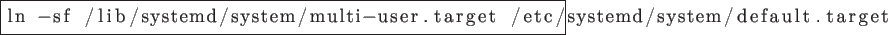
To check all groups on system
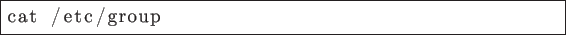
To add new group
To create new user, and add him to groups: [username], wheel (for possibility to use sudo), users and students.
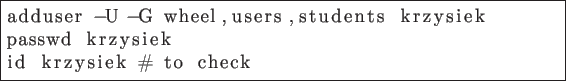
To configure DHCP Client
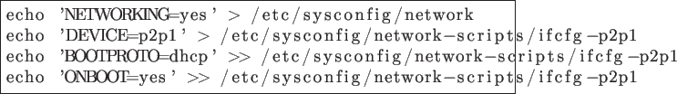
To add users tytus, romek and atomek
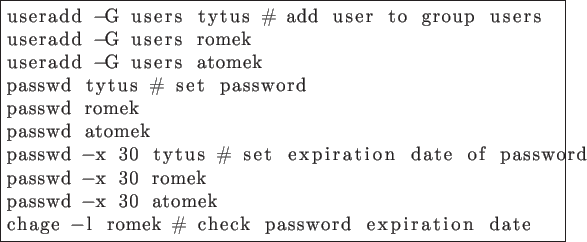
To add temporary group operators and add user romek to this group
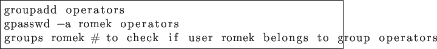
To create variable LOGINTIME available for every user (export makes the variable available to sub-processes)
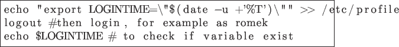
Now, I'm logging of and logging in as root again. To make user tytus able to use shutdown command without giving password using sudo
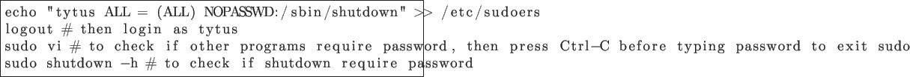
I'm starting VM and logging in as root again. To find statically linked programs (almost every is linked dynamically) and compare their sizes
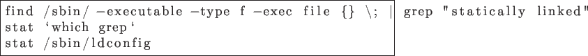
To synchronize time with external time server when the system is idle
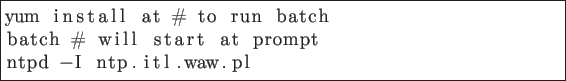
To update all packages
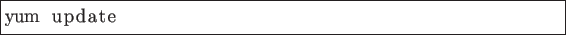
To check for any given file from which package it was installed
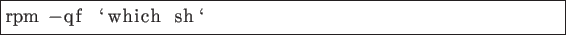
Krzysiek 2013-05-14